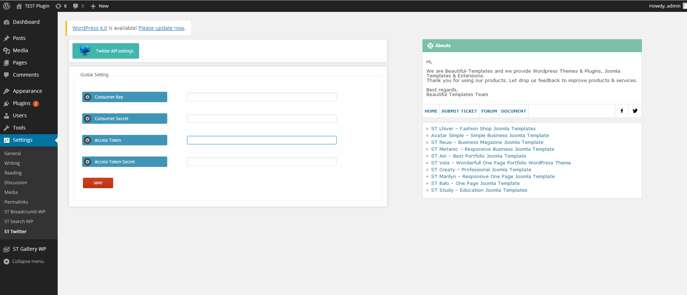
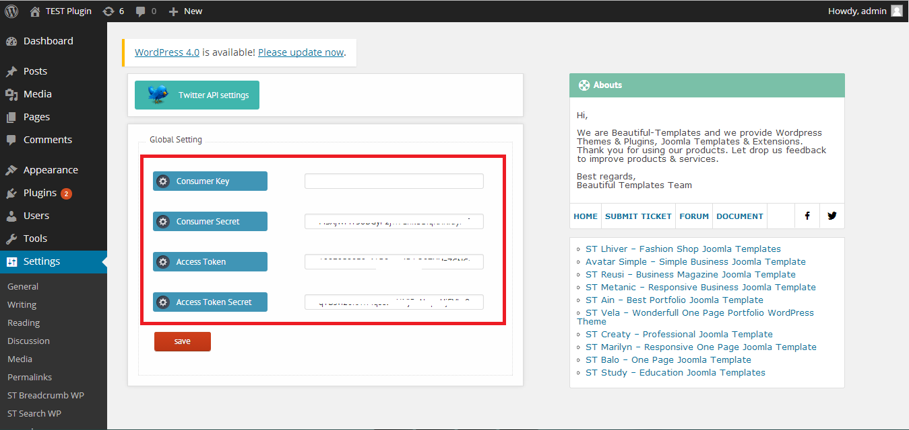
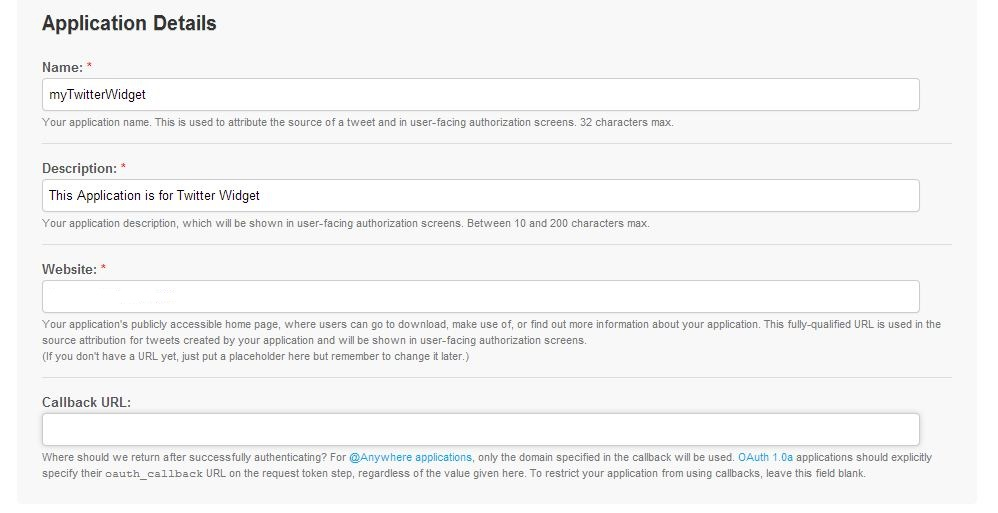
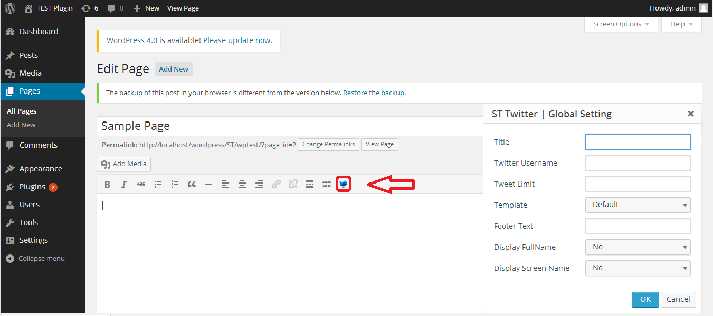

ST Twitter WP
Documentation
This documentation file helps you to understand whole plugin concept and how it works. You should read all sections of the file before start your work. After that you still can't find the solution yet, please leave a ticket on Support system then support agents help your issue.
1: Installing
If you do not have ST Twitter WP on your computer, you can download it here ↓
-
Step 1: Upload the entire st-twitter-wp folder to the /wp-content/plugins/ directory.
-
Step 2: Activate the plugin through the 'Plugins' menu in WordPress.
You will find 'ST Twitter WP' setting menu in your WordPress admin panel.
2: Update
If you have ST Twitter WP installed, check for updates and download latest version ↓
-
Step 1: Reupload the entire st-twitter-wp folder to the /wp-content/plugins/ directory. (override folder st-twitter-wp)
-
Step 2: Activate the plugin through the 'Plugins' menu in WordPress.
You will find 'ST Twitter WP' Setting menu in your WordPress admin panel.
3: User interface
This is the user interface after successfully installing the plugin.

In this section, I'll tell you how to configure the plugin.
-
Consumer Key
-
Consumer Secret
-
Access Token
-
Access Token Secret

With the new Twitter API updates you are now required to create an API and set up an authorized feed. Take a look at my guide below
- First login to you twitter account
- Go to https://dev.twitter.com/apps
- Click on Create New Application button.
- Fill up the form and submit it.

- After submitting the form, Scroll down a little, you will see Consumer Key and Consumer Secret information, but you will still need access token.
- Click “Create my access token” button at the bottom of the page, then you will get Access Token and Access Token Secret information. thats everything that you need!
Questions 1: How to insert ST Twitter to post, page?
-
Step 1: In post/page editor you click to button

-
Step 2: Settings and click to "OK"
- Title : Your Title
- Twitter Username : Your Twitter Name (Without the "@" symbol)
- Tweet Limit : Number Of Tweets
- Template : select template of tweet
- Footer Text : text is displayed in the bottom position
- Display Fullname
- Display Screen Name
Questions 2: How to insert ST Twitter to widget?
- Place PHP code
'< ? php do_shortcode("[STtwitter username="Your Twitter Name (Without the "@" symbol)" count="Number Of Tweets" title="Your Title" template=" Use the template defaults to '0' " display_screenname="2"]"); ? >'
to display twitter feeds in your page template.
- Place shortcode
'[STtwitter username="Your Twitter Name (Without the "@" symbol)" count="Number Of Tweets" title="Your Title" template=" Use the template defaults to '0' " display_screenname="2"]'
. Use the widget to place it in your sidebar or other areas!
If you have question beyond scope of this documentation, you can ask that with this form and your message will send us via ticket system or forum.